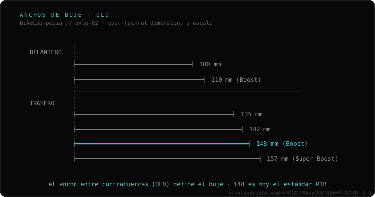

A largura de cubo —em inglês OLD (Over-Locknut Dimension)— é a distância entre as faces externas dos batentes do cubo, e deve coincidir com o espaço interno entre as ponteiras do quadro ou do garfo. É a medida que decide se uma roda entra fisicamente na sua bike. Valores habituais: dianteiro 100 ou 110 mm; traseiro 135, 142, 148 (Boost) ou 157 (Super Boost). Se o OLD do cubo não coincide com o seu quadro, a roda não entra (ou entra forçada e danifica o quadro).
É o primeiro filtro de compatibilidade de qualquer roda: se a largura não coincide, o resto tanto faz.
O OLD se mede com um paquímetro entre as faces planas dos batentes do cubo (ou entre as faces internas das ponteiras do quadro, com a roda removida). É um dado externo: não confunda com o comprimento do eixo, que é maior. Uma tolerância de meio milímetro é aceitável no aço ou alumínio; no carbono, nenhuma: a largura deve ser exata.

O OLD do cubo deve ser idêntico à largura que o seu quadro ou garfo especifica. Não há conversão sem adaptadores (tampas/endcaps), e mesmo assim nem sempre é possível. Antes de comprar uma roda, confirme sua largura medindo entre as ponteiras.
Se você não sabe qual eixo, largura ou rosca usa o seu quadro, mande o caso. Diagnóstico real, sem te vender nada. Fale conosco no WhatsApp
Tire a roda e meça com um paquímetro a distância entre as faces internas das ponteiras onde o cubo apoia. Essa é a sua largura.
Não. O OLD é a largura entre os batentes do cubo; o eixo é mais comprido porque atravessa as ponteiras. São coisas distintas.
No aço, às vezes, com deformação controlada (cold-setting). No alumínio ou carbono, nunca: destrói.
© 2026 BikeLab Studio. Conteúdo sob CC BY 4.0: você pode copiar, traduzir e publicar, inclusive com fins comerciais. A citação é obrigatória. Sem atribuição, a licença é revogada automaticamente (CC BY 4.0, §6.a) e o uso passa a ser violação de direitos autorais: solicitamos a retirada do conteúdo e sua desindexação. · Design e propriedade: Carlos Ravello Joo